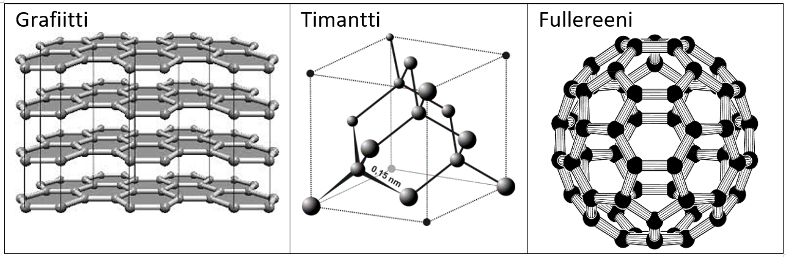

Hiilen kemiaa
Contents
Hiilen kemiaa#
Orgaanisessa kemiassa yhdisteet ovat sellaisia molekyylejä, joiden rakenteeseen kuuluu oleellisesti hiili. Hiilestä muodostuu molekyylin runko, ja hiiliä voi olla hyvinkin paljon. Orgaaninen kemia on alun perin ajateltu pelkästään elollisiin olioihin liittyväksi “luonnon kemiaksi”, mutta orgaanisia yhdisteitä tehdään paljon myös laboratoriossa, synteettisesti. Esimerkiksi särkylääkkeenä toimiva aspiriini on halvempaa valmistaa laboratoriossa kuin kerätä luonnosta.
Hiiliyhdisteitä luokitellaan sen mukaan, mitä muita alkuaineita molekyylissä on, ja miten ne ovat molekyyliin järjestäytyneet. Tuttuja hiiliyhdisteistä koostuvia aineita ovat mm.
materiaalit: muovit, öljyt, kankaat, paperit…
ravintoaineet: rasvahapot, hiilihydraatit, aminohapot (proteiinit)
luonnon rakenneaineet: kasvien ja eläinten solujen osat
Hiilen järjestysluku jaksollisessa järjestelmässä on 6. Hiiliatomissa on siis 6 protonia ja 6 elektronia. Elektroneista kaksi on sisimmällä elektronikuorella ja neljä uloimmalla. Neljä ulkoelektronia mahdollistavat hiilen liittymisen muihin alkuaineisiin (tai toisiin hiiliin) hyvin monin eri tavoin. Orgaanisen kemian yhdisteitä tunnetaan yli 40 miljoonaa.
Hiiltä on alun perin syntynyt (ja syntyy koko ajan lisää) tähdissä. Hiiltä esiintyy kaikessa elollisessa (kasvit, eläimet) ja niiden jäänteissä (öljyt, orgaaninen maa-aines), ilmakehässä ja merissä (esim. hiilidioksidi) sekä kallioperässä (esim. karbonaatit, timantit).
Hiilen allotrooppiset muodot#
Hiiliatomi voi kiinnittyä toisiin hiiliatomeihin monin eri tavoin. Rakenteita, joita näistä eri kiinnitystavoista muodostuu, sanotaan hiilen allotrooppisiksi muodoiksi. Yleisiä allotrooppisia muotoja on alla olevissa kuvissa.

Grafiitti: hiiliatomit muodostavat levyjä, jotka voivat liukua toistensa päällä. Lyijykynän ”lyijy” on grafiittia.
Timantti: hiiliatomit muodostavat hyvin kestävän hilarakenteen. Timantti on erittäin kovaa ainetta.
Fullereeni: hiiliatomit järjestäytyvät pallomaiseksi muodoksi. Hiiliatomeja on pallossa yleensä 60, mutta niitä voi olla enemmänkin. Luonnostaan fullereeniä esiintyy noessa. Fullereenia voidaan hyödyntää modernissa nanoteknologiassa.
Kivihiili ja puuhiili koostuvat pienistä grafiittikiteistä. Hiilikuidut puolestaan ovat ry-pistynyttä grafiittia. Tällaista hiiltä, jolla ei ole yhtä selkeää muotoa, sanotaan amorfiseksi hiileksi.
Hiilen sidokset#
Hiili muodostaa yhdisteitä toisten hiilten ja seuraavien alkuaineiden kanssa: vety H, happi O, typpi N, rikki S, halogeenit (fluori F, kloori Cl, bromi Br, jodi I).
Hiilellä on neljä ulkoelektronia, joten se voi muodostaa muiden aineiden kanssa erilaisia sidoksia siten, että sidosten määrä on aina yhteensä 4. Sidokset ovat luonteeltaan kovalenttisidoksia, eli hiili ei muodosta ionia, vaan jakaa ulkokuoren elektroneja toisen atomin kanssa. Sidoksen jaotellaan yksinkertaisiin, kaksois- ja kolmoissidoksiin sen mukaan, montako ulkoelektronia osallistuu sidokseen kummastakin sidoksen muodostavasta atomista. Taulukossa kerrotaan, minkä atomien kanssa hiiliatomit muodostavat eri tyyppisiä sidoksia.
sidostyyppi |
selitys |
minkä kanssa muodostuu |
|---|---|---|
yksinkertainen |
sidoksessa on kummastakin atomista yksi ulkoelektroni |
hiili, vety, halogeenit |
kaksoissidos |
sidokseen osallistuu kummastakin atomista kaksi ulkoelektronia |
hiili, typpi, happi, rikki |
kolmoissidos |
sidokseen osallistuu kummastakin atomista kolme ulkoelektronia |
hiili, typpi (happi) |
Hiiliatomien väliset sidokset ovat lujia, ja siksi hiiliyhdisteet ovat kemiallisesti kestäviä. Sidostyyppi (yksinkertainen, kaksois- tai kolmoissidos) vaikuttaa muodostuvan molekyylin toimintaan.
Poolisuus#
Joissakin orgaanisen kemian yhdisteissä on sellaisia sidoksia, joissa sidoselektronit eivät jakaudu täysin tasaisesti sidoksen eri atomeille. Elektronien tasaista tai epätasaista jakoa atomien välillä kuvaa termi poolisuus.
Kun kaikissa molekyylin sidoksissa elektronit jaetaan suunnilleen tasan, sanotaan, että molekyyli on vain heikosti poolinen.
Jos taas jokin atomeista vetää elektroneja tiukemmin itselleen, sanotaan että molekyyli on (vahvasti) poolinen.
Jos yhdisteen poolisuutta haluaa arvioida lukuarvolla, sen voi tehdä etsimällä jaksollisesta järjestelmästä yhdisteen alkuaineiden ns. elektronegatiivisuusarvot. Jos ne ovat lähes samat, yhdiste ei ole kovinkaan poolinen.
Kun poolisuus on vähäistä, molekyylien välillä ei ole voimakkaita sähköisiä vuorovaikutuksia. Molekyylissä ei siis ole selkeitä sähkövarauksellisia kohtia, joista molekyylit voisivat tarttua toisiinsa kiinni. Molekyylit erkanevat helposti toisistaan. Tämä ilmenee erittäin matalina sulamis- ja kiehumispisteinä. Esimerkiksi metaani (maakaasu) kiehuu jo -162 °C lämpötilassa, eli se esiintyy aina kaasuna.
Poolisuudesta voidaan päätellä myös se, liukeneeko aine helposti veteen tai ns. orgaanisiin liuottimiin. Aineet liukenevat toisiinsa hyvin, kun niiden poolisuus on samaa suuruusluokkaa. Yksi kemian peruslausahdus kuuluukin, että “samanlainen liuottaa samanlaista.” Esimerkiksi vesi on pienenä molekyylinä erittäin voimakkaasti poolinen aine mutta monet muut kemianteollisuuden liuottimet, joiden hiiliketjut koostuvat useista hiiliatomeista, ovat vain hyvin heikosti poolisia. Orgaanisen kemian yhdisteiden poolisuus vaihtelee yhdistetyypin mukaan.